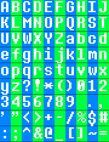

Back
I was considering making a proper font editor page, before realizing there really isn't much point.
It's not like there's a whole file for them, it's just a png file and maybe a txt file.
So instead...

I offer thee my font template.
Essentially, just open this image in Photoshop or whatever, and draw your own letters, then make it transparent.
Though, the letters can really be any size! Just make sure each character works within the same space (1/10 the width, 1/9 the height).
And if you want more control, you can take a moment to create a spacing file for it!

Oh, and the formatting for the spacing file is "[Decorative],(x_off),(y_off),(width)", with the last line being the linebreak height.